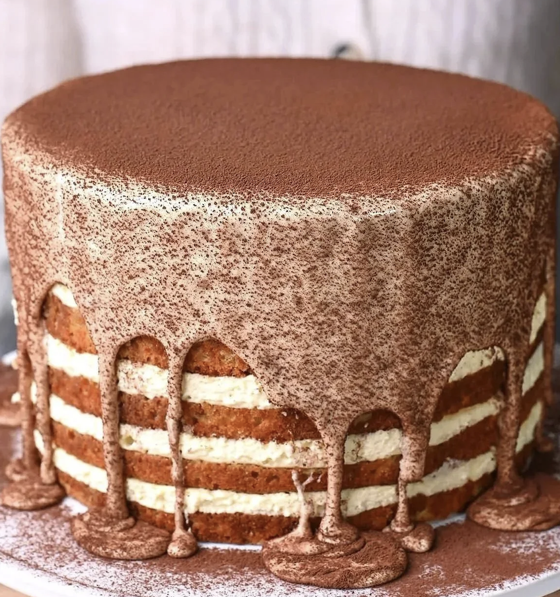

Espressotinimisu Cake

Tiramisu. Espresso martinis. Chiffon cake. This recipe brings together some of my favorite flavors into one bold,
boozy cake.
It starts with a super light and fluffy chiffon-style vanilla sponge — softer and more open than ladyfingers,
which means more soak. And believe me, you want more of this soak: sweetened espresso or strong coffee, spiked
with coffee liqueur, vodka, and vanilla.
The filling is a true tiramisu mascarpone cream, made by whipping egg yolks with sugar, mascarpone, and cream for
the easiest, most delicious filling. Once chilled, the cake becomes even more moist — almost tres leches–like.
For maximum drama, it’s finished with reserved cream, thinned with a little heavy cream and poured over the top,
then dusted generously with cocoa. A true showstopper that’s both an after-dinner drink and dessert in one.
Ingredients
Vanilla Chiffon Cake
- 2 ½ cups cake flour (300 g)
- 1 ½ tsp baking powder
- ½ tsp baking soda
- ¾ tsp Diamond Crystal kosher salt (or ½ tsp Morton kosher salt)
- 2 cups granulated sugar (400 g)
- 4 large eggs, room temperature
- ¾ cup neutral oil (180 g; canola, vegetable, or grapeseed)
- 1 ¼ cups buttermilk, room temperature (300 g)
- 1 tbsp vanilla extract or vanilla bean paste
Espresso Martini Soak
- 1 cup fresh brewed espresso (240 ml)
- 2 tbsp granulated sugar (25g)
- ½ cup coffee liqueur, like Kahlúa or Mr. Black (120 ml)
- 4tbsp rum (60 ml)
- ½ tsp vanilla extract or vanilla bean paste
- Pinch of salt
Tiramisu Mascarpone Cream Filling
- 5 large egg yolks, cold
- ¾ cup granulated sugar (150 g)
- ½ tsp Diamond Crystal kosher salt (or ¼ tsp Morton kosher salt)
- 1 tsp cornstarch (3 g)
- 2 1/4 cups mascarpone (360 g)
- 1 1/2 tbsp vanilla extract or vanilla bean paste
- 1 cup heavy cream, cold (240 ml)
Instructions
Make the Cake
- Preheat oven to 325°F (165°C). Grease and line the bottoms of three 8-inch round cake pans with parchment.
- In a medium bowl, whisk together the flour, baking powder, baking soda, and salt.
- In a stand mixer fitted with the whisk attachment, beat the eggs and sugar on medium-high speed for 2–3
minutes, until pale and thickened.
- With the mixer on low, slowly stream in the oil, mixing until fully incorporated. Then, add the buttermilk
and vanilla, mixing to combine.
- Add the dry ingredients to the wet mixture and whisk by hand until no streaks of flour remain.
- Divide the batter evenly among the prepared pans. Tap each pan gently on the counter to release surface
bubbles.
- Bake for 25–30 minutes, or until springy in the center and a toothpick inserted comes out clean.
- Let the cakes cool in their pans for 10–15 minutes, then run an offset spatula around the edges to
loosen. Flip each cake firmly onto a wire rack, remove the parchment, and let cool completely.
- Once fully cool, use a serrated knife to split each cake horizontally to create 6 total layers. This
step is optional—you may instead leave the cakes intact for a 3-layer cake with thicker mascarpone
filling between each layer. Tip: For a straight, even cut, position yourself at eye
level and slowly score a shallow line around the cake edge. Rotate and gradually deepen the line until cut
through.
Make the Soak
- While the coffee is still hot, whisk in the sugar until fully dissolved. Then, stir in the coffee liqueur,
vodka, vanilla, and salt.
- Let cool to room temperature before using.
Make the Mascarpone Cream
- In a stand mixer fitted with the whisk attachment, combine the egg yolks, sugar, salt, and cornstarch. Whip
on high speed for 4–5 minutes, until thick, pale, and ribboning.
- Add the cold mascarpone and beat on medium-high speed until completely smooth and lump-free, scraping down
the bowl as needed.
- Add the vanilla and cold heavy cream, and whip on medium-high until the mixture reaches firm peaks, about
2–3 minutes.
- Reserve about 1 ¼ cups of the finished cream. Whisk in 3 tablespoons of cold heavy cream to loosen.
Refrigerate until ready to pour over the cake just before serving.
- Use the remaining cream immediately for assembly, or refrigerate until ready to use.
Assemble the Cake
- Place an 8-inch cake ring or springform pan on a cake stand or serving plate that fits in your fridge. Line
the inside with a tall strip of acetate — it should be approximately 5.5 inches tall, so it extends at least
½ inch above the assembled cake.
(If you do not have a cake ring or acetate, you can assemble the cake
free-form.)
- Place one cake layer inside the ring, cut side up. Brush generously with the espresso soak.
- Add a layer of mascarpone cream and smooth with the back of a spoon or an offset spatula.
- Repeat with the remaining layers, finishing with a final layer of cake, cut side up, then brush generously
with espresso soak.
- Chill the assembled cake in the refrigerator for at least 8 hours, preferably overnight.
- Just before serving, remove the cake ring, leaving the acetate in place (if you have it).
- Pour the reserved, thinned mascarpone cream onto the top layer, allowing it to fill the top and settle
within the acetate collar. If you're not using acetate, simply pour the cream over the top and let it
naturally flow down the sides.
Dust the top generously with Dutch-process cocoa powder.
- If using acetate, remove the strip to let the cream naturally cascade down the sides.
- Serve cold. Store the cake in the refrigerator for up to 3 days.
Home